Hai! Selamat datang di website saya. To be honest, ini merupakan website pertama saya yang bukan merupakan blog. Thanks to github dan IRK! Jadi, sebenarnya tujuan utama saya buat website ini adalah dalam rangka memenuhi tugas yang diberikan oleh kakak-kakak lab IRK kepada Ca-IRK 2017. Karena ini merupakan website yang pertama kali saya buat, maklum ya teman-teman kontennya hanya sedikit dan design-nya masih kelihatan pemula banget.
Sebenarnya saya dari dulu tidak begitu tertarik dengan web design. Tapi, setelah membuat website ini, dipikir-pikir seru juga yah bikin website itu, meski ribet karena harus memikirkan dari segi design dan code-nya sekaligus. Segitu aja deh intermezzo-nya. Selamat menjelajah!
Selamat datang di laman ini. Di sini saya akan berbagi cerita sedikit mengenai diri saya. Saya dilahirkan dengan nama Rachel Sidney Devianti di Jakarta pada tanggal 18 Desember 1997. Namun, saat ini saya menghabiskan sebagian besar waktu saya untuk berkuliah di Bandung. Jurusan yang saya ambil adalah Teknik Informatika dan pada saat ini saya akan memasuki semester ke-5.
Jangan kalian pikir karena saya mengambil jurusan Teknik Informatika lalu saya hobi coding yah. Coding itu hanyalah hal yang saya sukai, namun hobi saya yang sesungguhnya adalah naik sepeda dan nonton. Di sela-sela kesibukan saya, saya selalu menyempatkan diri untuk menonton, entah itu nonton bioskop, nonton Youtube, ataupun nonton online. Karena bagi saya, ketika kita terlalu sibuk, kita cenderung akan menjadi stress. Oleh sebab itu, kita butuh refreshing untuk menjernihkan otak kita, salah satunya adalah dengan melakukan hal yang kita sukai.
Motto hidup yang saya pegang teguh sekarang ini adalah "Love your neighbor as yourself". Bagi saya, yang terpenting di dalam hidup ini adalah dimana kita dapat menyayangi sesama kita seperti kita menyayangi diri kita sendiri. Hal ini sebenarnya sangat sulit untuk dilakukan mengingat sifat dasar kita adalah cenderung menyayangi diri kita sendiri dan tidak memperdulikan orang lain. Namun, seiring berjalannya waktu saya makin belajar untuk memaknai motto hidup saya ini. Sekian info-info yang dapat saya bagikan mengenai diri saya. Senang berbagi dengan kamu!
Kompresi data adalah proses pengubahan sekumpulan data menjadi suatu kode untuk menghemat tempat penyimpanan dan waktu untuk melakukan transmisi data. Terdapat banyak algoritma yang dapat digunakan untuk melakukan kompresi data. Berdasarkan tipe peta kode yang digunakan untuk mengubah pesan awal (file input) menjadi sekumpulan codeword, metode kompresi terbagi menjadi dua kelompok, yaitu:
Ada beberapa faktor yang sering menjadi pertimbangan dalam memilih suatu metode kompresi yang tepat, yaitu: kecepatan kompresi, sumber daya yang dibutuhkan (memori dan kecepatan PC), ukuran file hasil kompresi, besarnya redundansi, dan kompleksitas algoritma. Berikut ini akan dibahas mengenai kompresi data dengan menggunakan algoritma Huffman, LZW, dan DMC. Kemudian, akan dianalisis rasio/perbandingan ukuran file hasil kompresi terhadap file asli dan kecepatan kompresi untuk masing-masing algoritma.
Algoritma Huffman ditemukan oleh David Huffman pada tahun 1952. Algoritma ini merupakan salah satu algoritma paling lama dan paling terkenal dalam kompresi teks dan seringkali diajarkan pada mata kuliah Informatika. Algoritma Huffman menggunakan prinsip pengkodean yang mirip dengan kode Morse, yaitu tiap karakter (simbol) dikodekan hanya dengan kombinasi beberapa bit, dimana karakter yang sering muncul dikodekan dengan rangkaian bit yang pendek dan karakter yang jarang muncul dikodekan dengan rangkaian bit yang lebih panjang. Berikut ini adalah cara kerja algoritma Huffman secara lengkap. Untuk memudahkan, akan diambil contoh string yang akan dikodekan, yaitu “ABACCDA”.
Tanpa menggunakan algoritma Huffman, dalam kode ASCII, string 7 huruf “ABACCDA” membutuhkan representasi 7 × 8 bit = 56 bit, dengan rincian sebagai berikut:
01000001(A) 01000010(B) 01000001(A) 01000011(C) 01000011(C) 01000100(D) 01000001(A)
Penerapan algoritma Huffman yang terdapat pada langkah 1-3 dapat mengurangi jumlah bit yang dibutuhkan. Hal ini dilakukan dengan mempersingkat panjang kode untuk tiap karakter, terutama untuk karakter yang frekuensi kemunculannya besar. Pada string “ABACCDA”, frekuensi kemunculan A = 3, B = 1, C = 2, dan D = 1, sehingga dengan menggunakan algoritma di atas diperoleh kode Huffman seperti berikut ini.
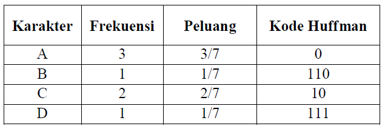
Gambar 1. Kode Huffman untuk string “ABACCDA”
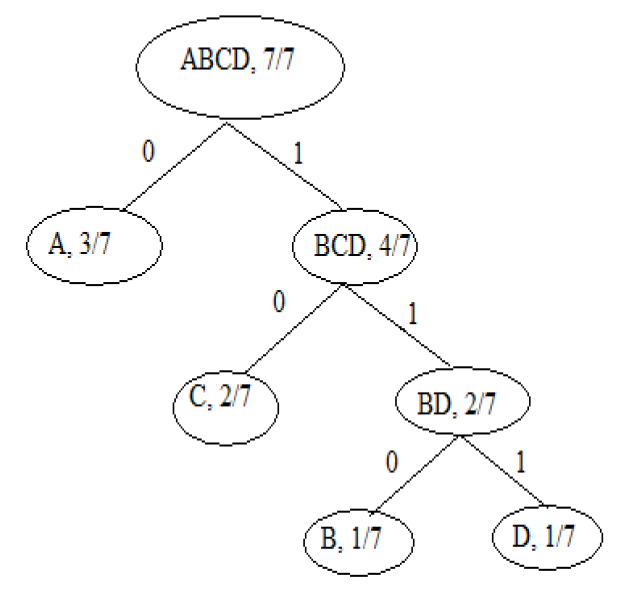
Gambar 2. Pohon Huffman untuk string “ABACCDA”
Dengan menggunakan algoritma Huffman, string “ABACCDA” direpresentasikan menjadi rangkaian bit: 0 110 0 10 10 111 0. Jadi, jumlah bit yang dibutuhkan untuk menyimpan string hanya 13 bit. Angka ini tentunya jauh lebih kecil dibandingkan angka yang didapatkan tanpa melakukan kompresi yaitu 56 bit.
Untuk menguraikan kembali data yang sudah dikodekan dengan algoritma Huffman, dapat digunakan cara sebagai berikut:
Algoritma LZW dikembangkan dari metode kompresi yang dibuat oleh Ziv dan Lempel pada tahun 1977. Algoritma ini melakukan kompresi dengan menggunakan kamus, di mana fragmen-fragmen teks digantikan dengan indeks yang diperoleh dari sebuah kamus. Pendekatan dengan algoritma ini bersifat adaptif dan efektif karena banyak karakter dapat dikodekan dengan mengacu pada string yang telah muncul sebelumnya dalam teks. Berikut ini adalah cara kerja algoritma kompresi LZW secara lengkap.
Sebagai contoh, string “ABBABABAC” akan dikompresi dengan menggunakan LZW. Kamus pada awal proses diisi dengan tiga karakter dasar, yaitu: ‘A’, ‘B’, dan ‘C’. Berikut ini adalah tahapan proses kompresi.
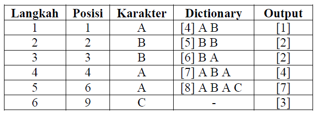
Gambar 3. Tahapan Kompresi Algoritma LZW
Kolom posisi menyatakan posisi sekarang dari stream karakter dan kolom karakter menyatakan karakter yang terdapat pada posisi tersebut. Kolom dictionary menyatakan string baru yang sudah ditambahkan ke dalam dictionary dan nomor indeks untuk string tersebut ditulis dalam kurung siku. Kolom output menyatakan kode output yang dihasilkan oleh langkah kompresi. Berikut ini adalah hasil proses kompresi.
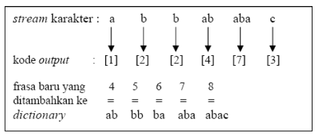
Gambar 4. Hasil Proses Kompresi Algoritma LZW
Proses dekompresi data pada algoritma LZW tidak jauh berbeda dengan proses kompresinya. Pada dekompresi LZW, juga dibuat tabel kamus dari data input kompresi sehingga tidak diperlukan penyertaan tabel kamus ke dalam data kompresi. Berikut ini adalah langkah-langkah dekompresi algoritma LZW:
Algoritma DMC merupakan algoritma kompresi data yang dikembangkan oleh Gordon Cormack dan Nigel Horspool. Algoritma ini menggunakan pengkodean aritmetika mirip dengan prediksi oleh pencocokan sebagian (PPM), kecuali bahwa input diperkirakan satu bit pada satu waktu (bukan dari satu byte pada suatu waktu). DMC merupakan algoritma kompresi yang adaptif, karena struktur mesin finite-state berubah seiring dengan pemrosesan file. Kemampuan kompresinya tergolong amat baik, meskipun waktu komputasi yang dibutuhkan lebih besar dibandingkan metode lain dan membutuhkan sedikit lebih banyak memori.
Pada DMC, simbol alfabet input diproses per bit, bukan per byte. Setiap output transisi menandakan berapa banyak simbol tersebut muncul. Penghitungan tersebut dipakai untuk memperkirakan probabilitas dari transisi. Contohnya pada gambar berikut, transisi yang keluar dari state 1 diberi label 0/5, artinya bit 0 di state 1 terjadi sebanyak 5 kali.
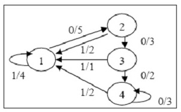
Gambar 5. Model untuk Metode DMC
Secara umum, transisi ditandai dengan 0/p atau 1/q dimana p dan q menunjukkan jumlah transisi dari state dengan input 0 atau 1. Nilai probabilitas bahwa input selanjutnya bernilai 0 adalah p / (p + q) dan probabilitas input selanjutnya bernilai 1 adalah q / (p + q). Lalu bila bit sesudahnya ternyata bernilai 0, jumlah bit 0 yang ditransisi sekarang ditambah satu menjadi p + 1. Begitu pula bila bit sesudahnya ternyata bernilai 1, jumlah bit 1 yang ditransisi sekarang ditambah satu menjadi q + 1. Berikut ini adalah rincian algoritma kompresi DMC:
Masalah tidak terdapatnya kemunculan suatu bit pada state dapat diatasi dengan menginisialisasi model awal state dengan satu. Probabilitas dihitung menggunakan frekuensi relatif dari dua transisi yang keluar dari state yang baru.
Jika frekuensi transisi dari suatu state t ke state sebelumnya, yaitu state u, sangat tinggi, maka state t dapat di-cloning. Ambang batas nilai cloning harus disetujui oleh encoder dan decoder. State yang di-cloning diberi simbol t’. Aturan cloning adalah sebagai berikut:
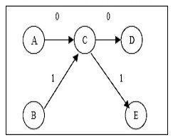
Gambar 6. Model Markov Sebelum Cloning
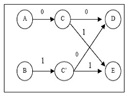
Gambar 7. Model Markov Setelah Cloning
Kita sudah membahas definisi dan cara kerja dari masing-masing algoritma kompresi data. Sekarang, akan dibahas perbandingan kinerja dari ketiga algoritma kompresi tersebut. Jika kinerja algoritma Huffman dibandingkan dengan algoritma LZW dan DMC, maka akan diperoleh hasil seperti berikut ini.
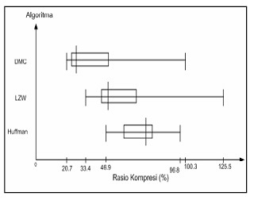
Gambar 8. Box Plot Rasio Kompresi Algoritma Huffman, LZW, dan DMC
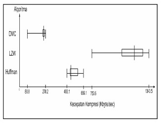
Gambar 9. Box Plot Kecepatan Kompresi Algoritma Huffman, LZW, dan DMC
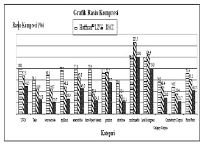
Gambar 10. Grafik Perbandingan Rasio Kompresi Algoritma Huffman, LZW, dan DMC
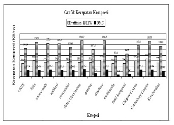
Gambar 11. Grafik Perbandingan Rasio Kompresi Algoritma Huffman, LZW, dan DMC
Dari grafik di atas, dapat kita lihat bahwa secara rata-rata algoritma DMC menghasilkan rasio file hasil kompresi yang terbaik (41.5% ± 25.9), diikuti algoritma LZW (60.2% ± 28.9) dan terakhir algoritma Huffman (71.4% ± 15.4). Selain itu, dapat kita lihat juga bahwa secara rata-rata algoritma LZW membutuhkan waktu kompresi yang tersingkat (kecepatan kompresinya = 1139 KByte/sec ± 192,5), diikuti oleh algoritma Huffman (555,8 KByte/sec ± 55,8), dan terakhir DMC (218,1 KByte/sec ± 69,4). DMC mengorbankan kecepatan kompresi untuk mendapatkan rasio hasil kompresi yang baik. File yang berukuran sangat besar membutuhkan waktu yang sangat lama bila dikompresi dengan DMC.
Secara keseluruhan, dapat disimpulkan bahwa algoritma Huffman dapat digunakan sebagai dasar untuk kompresi data karena pengaplikasiannya cukup mudah, dan dapat digunakan dalam berbagai jenis data. Rasio file hasil kompresi terbaik dapat diperoleh dengan menggunakan algoritma DMC. Sedangkan, algoritma yang memerlukan waktu kompresi tersingkat adalah algoritma LZW. DMC mengorbankan kecepatan kompresi untuk mendapatkan rasio hasil kompresi yang baik. Apabila dibandingkan dengan algoritma LZW dan DMC dalam kompresi data, algoritma Huffman masih kalah dalam hal rasio kompresi data maupun kecepatan kompresinya.